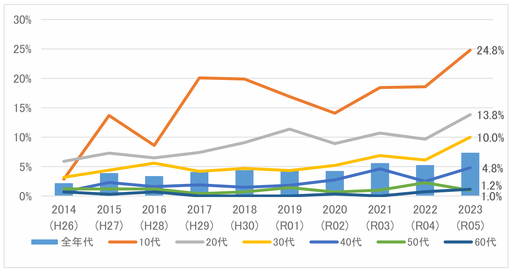
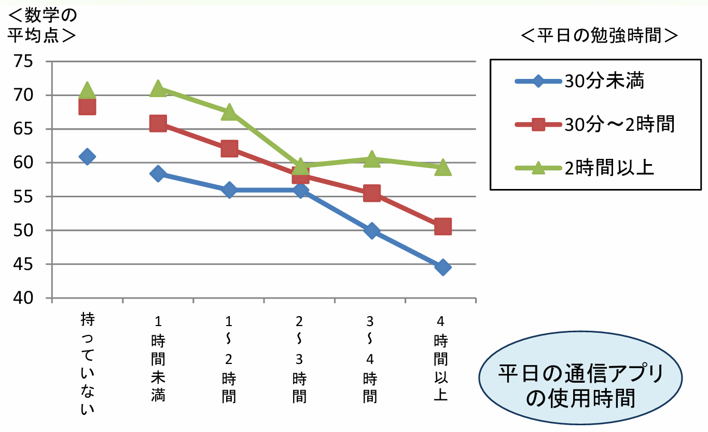
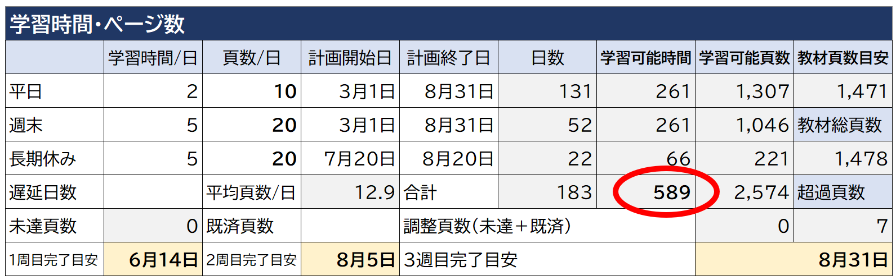
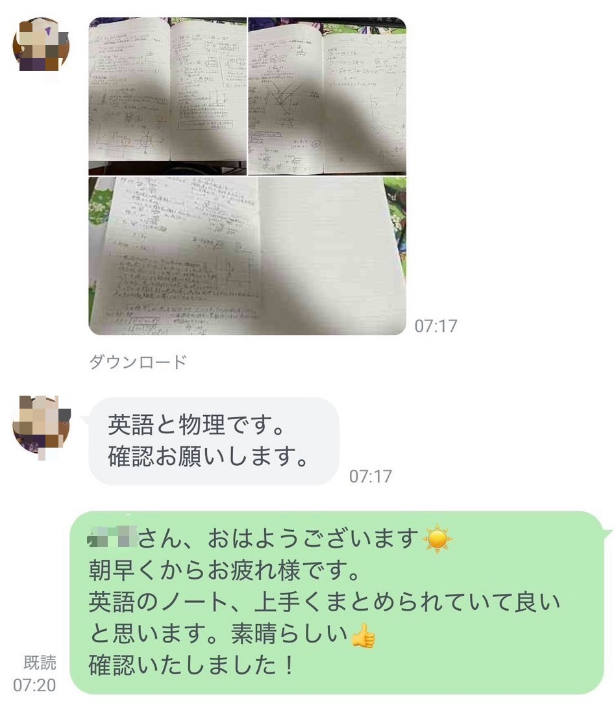
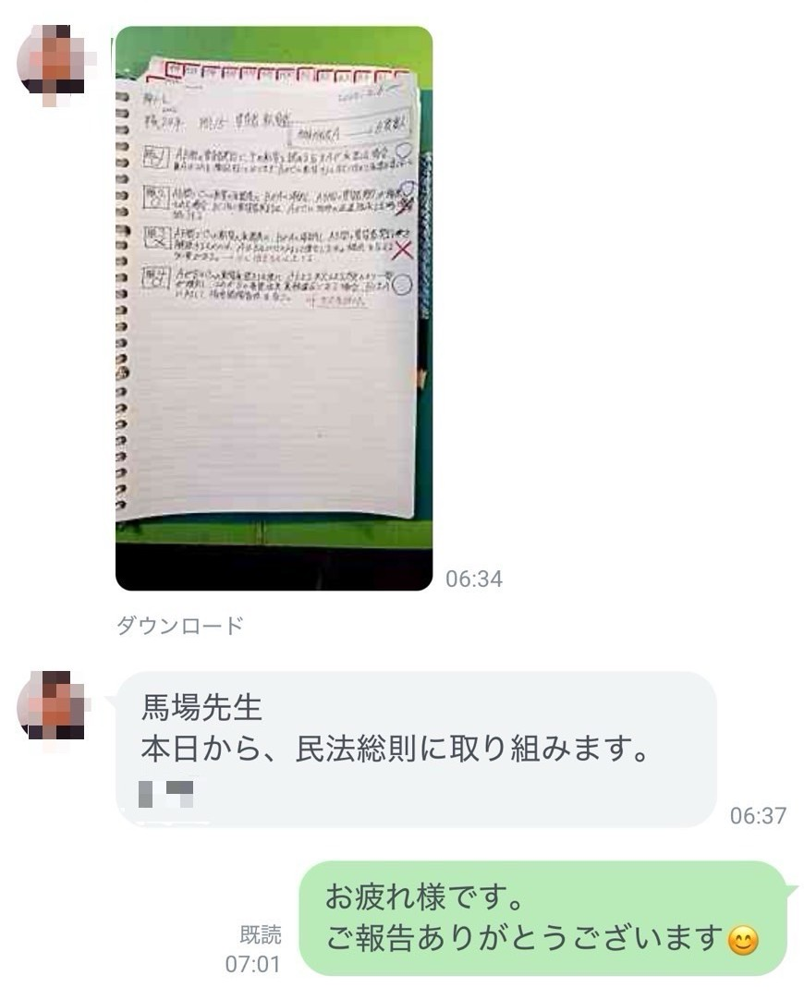
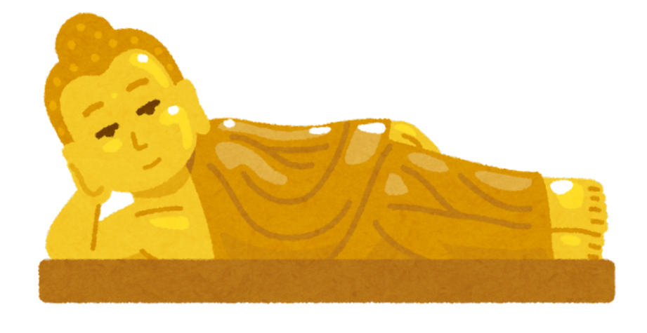
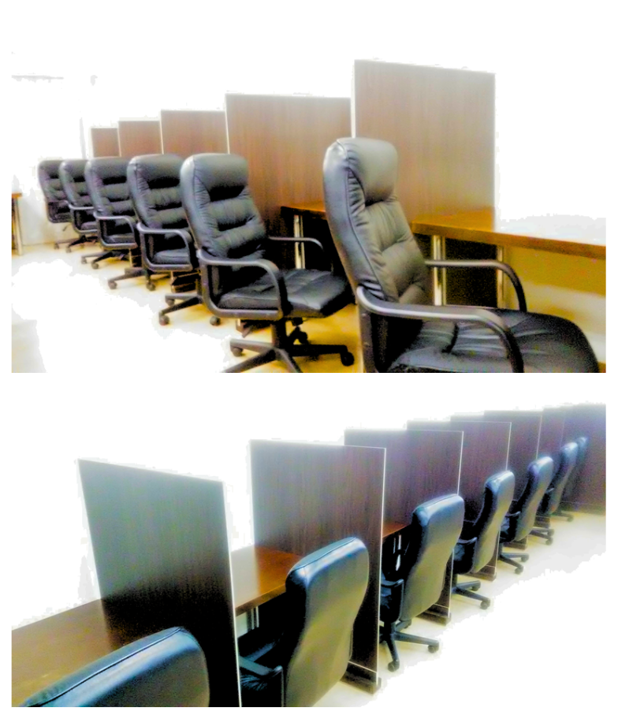
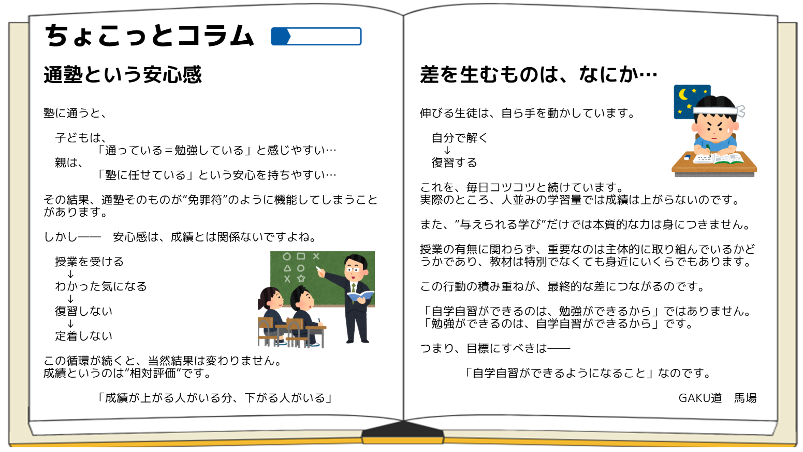

完全オンライン、学習計画と進捗管理に特化した道場
「塾や予備校に通っても成果が出ない･･･
自分でやり始めたけど続かない･･･、
でも、受験には本気で取り組みたい!」
「ゲームやスマホにばっかり夢中で、
ぜんぜん勉強をしない･･･、
何度言っても言うことを聞かない･･･。」
これらを解決するのが「GAKU道」です。

出典:総務省「令和5年度情報通信メディアの利用時間と情報行動に関する調査」
この結果、遅刻や欠席が増えたり、家族・友人とのトラブルが増加したりします。
近年、仙台市は東北大学と連携して、スマホやネット環境が学習意欲に与える影響について研究を進めています。グラフは、仙台市標準学力検査の中学生の数学の平均点と平日1日あたりの通信アプリの使用時間との関係について示したものです。
GAKU道では、これらの研究結果も踏まえた学習コンサルティングを2017年よりおこなっています。

出典:仙台市「平成26年度学習意欲の科学的研究に関するプロジェクト」
現状についてヒヤリングをする
目標・やること・期限を決める
学習計画を立てる
計画通りに実行する
やる内容、目標、計画などは最終的にすべてご本人が決めます。
PDCAを習慣化する
問題集や教材を決めて、長期・短期計画を作成します。
計画通りに学習を進めます。
学習状況を毎日チェックして、遅れがないか確認します。
計画に無理があるようであれば適宜修正していきます。
当道場では、計画を「時間単位」で立てていき、短期・長期スケジュールを組んでいきます。

未来が見えると、何をすべきかが明確になる。
時間を制する者が、受験を制する!



とてもやさしい仏モード。とりあえずやればほめてくれます。
※高校生以上は選べません。
最初はこちらがおすすめです。生徒・児童に合うよう伴走していきます。物足りなければ鬼モードへどうぞ。
難関校・難関資格を目指す方のほか、三日坊主や誘惑に弱い方にもおすすめです。短期間で、最も効果が上がります。
<子の視点 >
☑ 勉強に口出しされるとイライラしてしまう
☑ 親の期待が重くて、やる前から苦しくなる
<親の視点>
☑ 言わないと勉強しない、成績が上がらない
☑ スマホやゲームにばかり時間を使っている
当道場の方針として、公開しておりません。しかし、
ほぼ全員が、第一志望の合格をつかみ取っています。
※詳細は「問い合わせ・Q&A」をご覧下さい。
中学校: 二華中、青陵中、宮教大附属中、私立各校
高校: 県内ナンバー校、他公立校、私立校、高専
大学: 東北大、他国公立大、早慶、他私大、医歯学科
国家(公的)資格: 各士業資格、技能士、施工管理技士、国家公務員総合職、地方公務員上級、日商簿記検定、ビジネス法務実務検定など
民間資格: 英検、外国語検定、TOEIC、IT系資格、ファイナンシャルプランナー(AFP/CFP)など
小学生以下
中学生以上
※小学生は12歳年度末までの児童、中学生以上は高校・大学等の学生や社会人を含む。
※学習計画の作成・変更支援、日々の進捗管理や学習相談、月1回のカウンセリングを行います。
※解約はいつでも可能です。前月までにお気軽にお申し出ください。
入会金、年会費、教材費、手数料などは一切かかりません。
当道場は授業をしたり、具体的な解き方を教えたりといった部分を削ぎ落とし、戦略づくりと進捗管理に特化しています。
本当に必要な要素だけに絞り込むことで、他の塾や予備校に通うよりも、大きく費用を削減することができます。

北仙台駅から徒歩3分、“本気の人”を応援するARGOさん。集中できる環境で雰囲気も良くとてもリーズナブルな料金で利用できます。ぜひご利用くださいませ!
所在地:仙台市青葉区昭和町4-9 カーサ北仙台2階
空席確認・予約TEL:022-706-7123
戦略策定と実行支援のプロフェッショナルが、学生・社会人の自学自習をサポートします。独学のノウハウと塾講師・家庭教師としての経験から、自学自習のコツを体系化し、再現性ある形でみなさまにお伝えしています。
